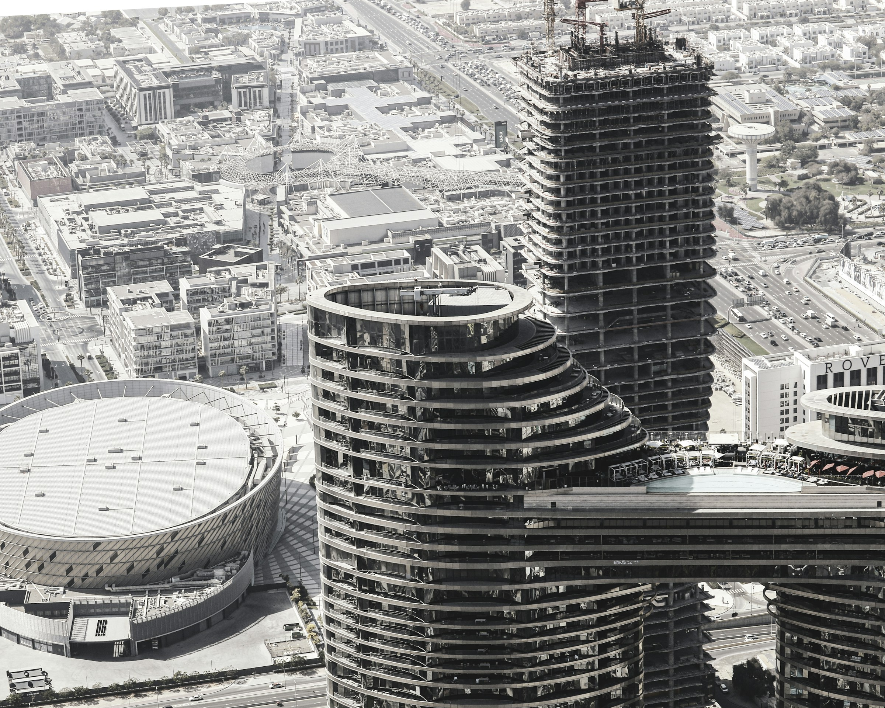

Land acquisition
& site selection
Coordinate site assessment, due diligence, and acquisition planning to connect the right opportunity with the owner's development goals.
A trusted partner beside you. From finding the right site to delivering the project—and managing the asset that follows.
Explore our services
Development is a sequence of decisions. Each one shapes the value, performance, and future of your asset.
Tisserin Group represents owners throughout that journey. We bring the consultants, contractors, and operating teams together around your objectives, giving you a clear view of progress and the decisions ahead.
Whether you need support at a critical stage or a partner from the outset, our role is to turn your priorities into coordinated action.
Practical oversight at every stage, with continuity from the first assessment through long-term operations.
Coordinate site assessment, due diligence, and acquisition planning to connect the right opportunity with the owner's development goals.
Align feasibility, approvals, design, budgets, and schedules. Keep the development team focused on a coherent, achievable delivery plan.
Represent your priorities, coordinate stakeholders, and bring forward clear recommendations on scope, cost, risk, and key decisions.
Monitor delivery against the approved scope, budget, and schedule. Coordinate reporting, review changes, and keep emerging issues visible.
Coordinate readiness, deficiencies, documentation, and the transition to operating teams so completion leads to a usable asset.
Oversee operating partners, maintenance priorities, and capital planning with attention to asset performance and the owner's ongoing objectives.
Explore how our role evolves through the life of your asset.
Our approach keeps the owner informed, the team aligned, and the work moving. We connect day-to-day execution with the bigger investment picture.
Define what success means for the asset, the investment, and the people who will use it.
Bring forward costs, trade-offs, risks, and recommendations in a form that supports timely owner decisions.
Establish clear responsibilities and coordinate the handoffs between development, construction, and operations.
Consider maintainability, operating requirements, and long-term asset performance while the project is still taking shape.
Tell us about your project and where you are today. We’ll help you explore the next steps.
From land acquisition to an operating asset, we’re ready to hear what you have in mind.